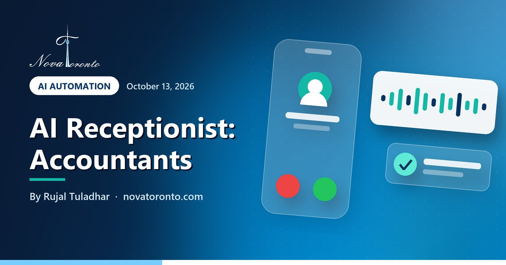

AI receptionist for accountants: what it handles, costs and must not do
Published October 13, 2026 • By Rujal Tuladhar

From late February to the end of April the phone at a small accounting or bookkeeping firm rings while everyone who could answer it is inside a return. Most of those calls are simple: are you taking new clients, what do I need to bring, can I move my appointment. A few are not simple at all.
This guide sets out what an AI receptionist for accountants can safely handle, what it has to hand to a person, what the listed plans cost in Canadian dollars, and what federal privacy law and the CPA Ontario code expect of you. Every figure comes from a page I opened on October 12, 2026.
32 million calls
What the CRA says it received last year, with peaks of nearly 300,000 a day in tax season
April 30 and June 15
The 2026 filing deadlines for most individuals and for the self-employed
US$29 to US$349 a month
Dialzara's four listed plans, about C$41 to C$498 at the October 9 exchange rate
Rule 208
CPA Ontario's confidentiality rule, which reaches anyone you give access to client information
Say it is recorded
The federal privacy regulator says callers must be told a call is being recorded, and why
AI receptionist for accountants: what it handles, costs and must not do at a glance — the short version.
Why tax season is the hard part
I could not find a published count of calls to Canadian accounting firms, so I will not quote one. The best public signal is the Canada Revenue Agency's own phone line. In its notes for the 2026 filing season, the CRA said it received more than 32 million calls the year before, with peaks of nearly 300,000 a day during tax season. The same page set deadlines of April 30, 2026 for most individuals and June 15 for the self-employed.
A Canadian Press report carried by Advisor.ca in February 2026 gave the shape of that curve: about 40,000 unique calls a day from October to December, rising to an average of about 90,000 a day from February to May.
Those are the CRA's phones, not yours, but the same taxpayers are calling in the same weeks.
What it can answer on its own
An AI receptionist is software that picks up the phone, follows a script you approve and sends you a summary. The calls that suit it are the ones where the answer is the same for everyone:
- Booking and rebooking. New-client consultations, document drop-offs and signing appointments, placed in your calendar.
- Hours, location and how to send documents. Tax-season hours, parking, and which portal or drop box you use.
- Document reminders. The general checklist you already hand out to personal-tax or year-end clients.
- Services and intake. Whether you do personal tax, corporate returns, bookkeeping or payroll, plus a few intake questions.
- Deadlines you have published. Your own cut-off date for receiving documents, read from the script.
None of these needs the software to open a client file.
What it must hand to a person
This section is my judgment, not a regulation. A phone agent should take a message and pass the call on, without attempting an answer, when a caller:
- Asks for tax advice. Whether something is deductible or whether to incorporate is professional work.
- Asks about their own file. Refund amounts, balances owing, whether a return was filed. The software cannot confirm who is on the line.
- Has a letter from the CRA. A review, an audit notice or a collections call needs a person the same day.
- Wants to give sensitive details by voice. Social insurance numbers, banking details and CRA account credentials should go through your secure channel, not into a call transcript.
- Is upset, or disputing a fee. Hand over quickly and say when someone will call back.
The script should also say plainly that the caller is speaking with an automated assistant, and offer a callback from a person at any point.
What it costs in Canadian dollars
Most of these tools are priced in US dollars. I converted at the Bank of Canada daily rate for October 9, 2026, which was C$1.4271 per US dollar.
- Dialzara states its prices in US dollars: $29 a month with 60 minutes (about C$41), $99 with 220 minutes (about C$141), $199 with 500 minutes (about C$284) and $349 with 1,000 minutes (about C$498). Extra minutes run from $0.48 down to $0.35 each. Appointment booking is listed on every plan. The page mentions call routing but does not say whether that includes transfer to a live person, so ask.
- Rosie lists $49 a month with 250 minutes, $149 with 1,000 minutes and $299 with 2,000 minutes. The page does not name the currency; if it is US dollars, that is about C$70, C$213 and C$427. Booking directly into your calendar and live call transfers start on the $149 plan, and an accounting firm needs both.
The trap for accountants is that minutes are monthly and your calls are not spread evenly. As an illustration only: if your calls average three minutes, a 220-minute plan covers roughly 73 calls, which may be plenty in August and gone early in April. I compared more tools in what an AI receptionist costs in 2026.
Privacy: PIPEDA and the CPA Ontario code
Three things apply before the first call is answered. None of this is legal advice.
PIPEDA covers the firm. The Privacy Commissioner's summary of the Act says it applies to private-sector organizations that collect, use or disclose personal information in the course of commercial activity, and its examples of personal information include income, ID numbers and credit records.
You stay responsible for the vendor. The Commissioner's accountability guidance tells organizations to protect all personal information they hold, including anything transferred to a third party for processing, and to appoint someone responsible for compliance. Recordings and transcripts held by a phone-agent provider are that kind of transfer.
Recording has rules. The Commissioner's page on recording customer telephone calls, updated October 8, 2026, says the organization must tell the customer the call is being recorded, should state the purpose as clearly and narrowly as possible, and must give the customer a choice. Where recording is not integral to the service, it expects an alternative, such as carrying on without recording. It also treats voiceprints as sensitive biometric information, so do not use a caller's voice to identify them.
CPAs carry a professional duty on top. Rule 208.1 of the CPA Ontario Code of Professional Conduct bars a member or firm from disclosing confidential information about a client or former client, with listed exceptions such as consent. Rule 208.3 requires appropriate measures to protect that information, access limited to those with a legitimate purpose, and a written agreement from any such person to keep it confidential. The copy I read is the version adopted in 2016, so check the current text with CPA Ontario. Bookkeepers who are not CPAs are outside that code but not outside PIPEDA.
Setting it up before February
A workable order for a small firm:
- Start with overflow and after-hours only. Your staff answer first; the software takes what they cannot.
- Write the script from real calls. Fixed answers for routine questions, plus the hand-off list above.
- Add the recording notice and a way to reach a person.
- Test it yourself in January. Call as a new client, as an existing client asking about a refund, and as someone holding a CRA letter. It should book the first and hand off the other two.
- Read the summaries weekly through April and fix whatever it got wrong.
Who should not bother: a firm that already has a full-time receptionist and few missed calls.
Nova Toronto builds and scripts AI receptionists for accounting firms in the GTA, quoted per project. If you would rather understand the technology first, the free AI course for beginners covers the basics in seven short lessons.
The bottom line
An AI receptionist suits an accounting firm for the calls with one fixed answer: booking, hours, document checklists and new-client intake. It should never give tax advice or discuss a specific client's file, and CRA letters and upset callers go to a person. Listed plans run from about C$41 to about C$498 a month at the current exchange rate, and the tax-season spike is what decides the plan. Tell callers if you record, and get the vendor's confidentiality terms in writing. To hear one scripted for an accounting office, book a free consultation.
Common questions
Can an AI receptionist give tax advice to callers?
It should not. Script it to book appointments, share hours, explain your services and read out your general document checklist. Any question about what is deductible, how to file or what a client owes should be taken as a message and passed to an accountant.
How much does an AI receptionist cost for an accounting firm in Canada?
Listed plans I read on October 12, 2026 ran from US$29 to US$349 a month at Dialzara, depending on minutes, which is about C$41 to C$498 at the Bank of Canada rate for October 9. Rosie lists $49 to $299 a month. A custom build from an agency is usually quoted per project.
Is an AI receptionist PIPEDA compliant for an accounting firm?
The software is not compliant or non-compliant by itself; the firm is responsible. The Privacy Commissioner says to protect personal information you transfer to a third party for processing, and to tell callers if a call is recorded and why. Collect as little as possible by phone and get the vendor's confidentiality terms in writing.
Can I use an AI receptionist only during tax season?
Often yes. The plans I looked at are billed monthly by minutes, so the practical approach is a small plan for after-hours calls most of the year and a larger one from February to April. Confirm with the provider that you can change plans month to month before you sign.
Want this working in your business?
Book a free 30-minute call and we'll map out which of these would actually save you time and win you customers.
Book a Free ConsultationNew to AI? Take our free 7-lesson AI course for beginners.
Sources: Canada Revenue Agency: What you need to know for the 2026 tax-filing season • Advisor.ca (The Canadian Press): CRA says it's ready for tax season after services revamp • Office of the Privacy Commissioner of Canada: Recording of customer telephone calls • Office of the Privacy Commissioner of Canada: PIPEDA requirements in brief • Office of the Privacy Commissioner of Canada: PIPEDA fair information principle 1, Accountability • CPA Ontario: CPA Code of Professional Conduct (Rule 208, Confidentiality of information) • Bank of Canada: Daily exchange rates • Dialzara: Pricing • Rosie: Pricing